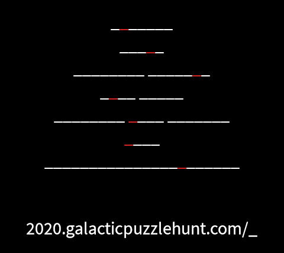
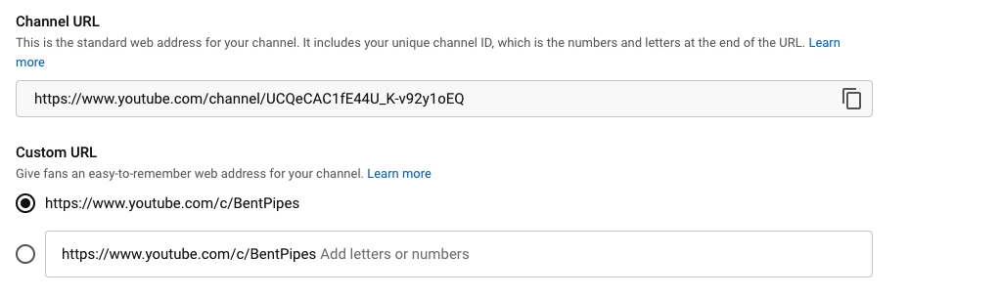
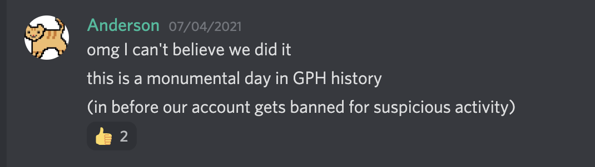

Solution: Four Sights
Answer: TELESCOPE
Written by Colin Lu, Leo Marchand, Rahul Sridhar, Anderson Wang, Ben Yang, Amon Ge
The flavortext hints that we want to find accounts on four sites. Each of the meta answers clues a different social media site, on which there is an account that has the meta answer as a username or vanity URL. The four are as follows:
Each of these websites contains a small subpuzzle that solves to a link on the website where we obtain one of the four pieces of the telescope. Once we have all four pieces, we unlock the final meta, Telescope.
Tinder
The Tinder profile @lightatorch consists of three images. The first just clues the URL format to use to “submit” the answer, while the next two consist of lists of crossword-style clues, with the second set of clues also including numbers in parentheses. The gradient backgrounds on the clue pages suggest that one set of clues is “cold”, while another is “hot”, in theme with Tinder. It turns out that the “hot” set of clues give phrases created by appending the word HOT to an answer from the “cold” set of clues.
After solving all of the clues, and using the numbers as indices into the original “cold” word, we get the answer MATCH BOOK, telling us to visit 2020.galacticpuzzlehunt.com/matchbook.
| “Cold” clue | “Hot” clue | Answer | Index | Extracted Letter |
|---|---|---|---|---|
| Toughened, as metal | On a short fuse | TEMPERED | 3 | M |
| Chair or bench, e.g. | Uncomfortable position to be in | SEAT | 3 | A |
| Food often eaten to break a Ramadan fast | It might follow a Tinder chat | DATE | 3 | T |
| Some questions are off it | Company that sells a lot of band T-shirts | TOPIC | 5 | C |
| Opportunity | Showy expert | SHOT | 2 | H |
| Fasten clothing, maybe | Emotionally charged, as an issue | BUTTON | 1 | B |
| It was legalized in Virginia earlier this month | Cooking method | POT | 2 | O |
| Staple food | Undesirable object | POTATO | 6 | O |
| Bad thing to get while driving | Very popular or in demand | TICKET | 4 | K |
Twitch
On the tinyjerk Twitch profile, both the stream title and the About tab display “The !answer you seek is in chat, for a modest fee of 100 !points”. After joining chat (and creating an account, if needed), we can type !answer to see a message from a chatbot saying “Make sure you have 100 !points, and check your whispers.” Typing !points shows that we currently have 0 points out of 100.
Every minute, a trivia question is asked in chat about a specific Twitch emote. Answering with the correct emote will award 25 points, and the correct answer will be revealed after one minute. After answering four questions correctly, we can type !answer to receive a whisper telling us to visit 2020.galacticpuzzlehunt.com/homeearthquakedetectionalarm.
| Question | Answer |
|---|---|
| Which emote features the face of Conan Liu, former StarCraft II player? | DAESuppy |
| Which emote is both a Greek letter and a grey face (with no space)? |  Kappa Kappa |
| Which double-facepalming emote’s name comes from the movie The Matrix? |  NotLikeThis NotLikeThis |
| If you can see this emote - AYAYA - you probably have an add-on installed named for what canine emote? |  FrankerZ FrankerZ |
| Which emote with a fitting symbol is often used when the cameraperson in a live stream misses the action in the shot? |  TTours TTours |
| Which emote often follows sarcastic advice, such as “just solve the puzzle”? |  4Head 4Head |
| Which emote depicts the Eye of Providence? | TheIlluminati |
| Which emote evolved out of this requesting kaomoji, popularly used in “༼ つ ◕_◕ ༽つ Give DIRETIDE”? |  GivePLZ GivePLZ |
| Which emote has a green face, and often encourages streamers to “GO FACE”? |  SMOrc SMOrc |
| Which emote celebrates the Helix Fossil from Twitch Plays Pokemon? |  PraiseIt PraiseIt |
The Twitter account has only made a single tweet which consists of the following image:

The account is following 28 other Twitter accounts, which can be categorized into 7 canonical “groups” each of which is missing a member:
| # | Group | Members | Missing |
|---|---|---|---|
| 2 | Penn & Teller | Teller | Penn |
| 3 | Jonas Brothers | Joe, Kevin | Nick Jonas |
| 4 | Big Four accounting firms | Ernst & Young, Deloitte, KPMG | PricewaterhouseCoopers |
| 5 | NBA Western Conference Northwest Division | Denver Nuggets, Portland Trail Blazers, Utah Jazz, Minnesota Timberwolves | Oklahoma City Thunder |
| 6 | The six friends of Friends | David Schwimmer, Lisa Kudrow, Courteney Cox, Matthew Perry, Matt LeBlanc | Jennifer Aniston |
| 7 | UN Delegations of the G7 countries | Japan, USA, France, UK, Germany, Canada | Italy |
| 8 | Ivy League Universities | Harvard, Princeton, Yale, Columbia, Brown, Dartmouth, University of Pennsylvania | Cornell |
The missing members fit into the blanks in the tweeted image in alphabetical order. If we re-sort by the size of the group the member is apart of, we spell PICCOLO, telling us to visit 2020.galacticpuzzlehunt.com/piccolo.
| Missing | Letter |
|---|---|
| Penn | P |
| Nick Jonas | I |
| PricewaterhouseCoopers | C |
| Oklahoma City Thunder | C |
| Jennifer Aniston | O |
| Italy | L |
| Cornell | O |
YouTube
When we visit the YouTube channel, we see one visible video. The audio of this video is Rock Lobster by the B-52’s. The visuals show only a black screen except for occasional images. We notice that each image appears for the duration of a single word in the lyrics. Furthermore, each image clues a word of equal length to the corresponding word in the song. Taking the common letter at the same position, we get the cluephrase VIEW CAPTION.
We next turn on closed captions for this video. The captions match the lyrics, except for the words that match with the images. The incorrect words are of the same length as the words from the previous step, but have different letters in each position. However, if we extract the letter from the incorrect word at the same position as was used in the previous step, we will be able to see our final answer of CRAZY STRAWS, telling us to visit 2020.galacticpuzzlehunt.com/crazystraws.
| Lyrics | Image | Extracted Letter | Caption | Extracted Letter |
|---|---|---|---|---|
| EVERYBODY | AVALANCHE | V | OCCUPANTS | C |
| MOTION | OFFICE | I | SPORTS | R |
| TROUBLE | VAMPIRE | E | MILITIA | A |
| DOWN | HAWK | W | BUZZ | Z |
| ROCK | ORCA | C | MAYO | Y |
| SURFBOARDS | COPENHAGEN | A | UNIVERSITY | S |
| POTATOES | PENTAGON | P | THINKPAD | T |
| TANNING | TORPEDO | T | REGULAR | R |
| STINGRAY | CLIFFORD | I | TEAMMATE | A |
| ROBIN | HORSE | O | DWARF | W |
| BIKINI | ISLAND | N | CORPSE | S |
Author’s Notes
Although registering the Tinder, Twitch, and Twitter accounts proved relatively straightforward, the YouTube account ended up being quite the challenge. YouTube allows custom channel URLs, but the channel needs to (1) be at least 30 days old, (2) have an uploaded profile picture, (3) have an uploaded banner image, and—most daunting of all—(4) have 100 or more subscribers.
There are about 35 people on the GPH writing team, so we figured that if we made an account and all subscribed and each got two friends to subscribe we’d be able to meet the threshold. We started executing on the plan and got all the way up to 65 subscribers by the time Mystery Hunt 2020 rolled around—at which point we completely forgot about the account for a little over a year.
When we came back to it we figured we could just pick up right where we left off (how hard would it be to rustle up 36 subscribers?) but we soon realized that we had forgotten the email we used to create the account. We spent about a week trying in vain to remember the login details but we eventually were forced to start from scratch.
Here we encountered another problem—the first 10 subscribers to the new account were shadowbanned overnight; they were still subscribed, but YouTube refused to count them in the subscriber metrics. We guessed that this was because we hadn’t uploaded any videos to the channel, so Rahul uploaded a random, innocuous video he had lying around:
20 days before the start of hunt we managed to reach 100 subscribers, but the option to pick a custom channel URL didn’t show up! We learned that we might have to wait up to 10 days to get the option. At this point we also tested the custom channel URL flow on the Yew Labs Mystery Hunt account—which did have over 100 subscribers—and learned that YouTube actually only lets you set your channel URL to be some extension of your channel name. We quickly renamed the channel to “Bent Pipes” and 2 days later the option showed up!

Rahul uploaded another Elephant Seal video—just to be safe:
During the brainstorming for this puzzle, many common social media sights were brought up, but many of them don't allow "vanity URLs" where custom content can be placed easily. Other sites were ruled out by the fact that we couldn't come up with any reasonable answer phrase that felt at least a little bit thematic to a meta, while also clearly cluing the site. Earlier on, the plan was for this puzzle to use Tumblr with the answer CIRCUS ACROBAT instead of Tinder, prior to the changes to the Night Vision Goggles meta. However, with the changed mechanic, CIRCUS ACROBAT (which was thematic because it started with the "Sir" syllable) needed to be changed, and Tinder with LIGHT A TORCH seemed like the best option.
Ultimately, Tinder did seem to be the most difficult of the sites to find for solvers, partially because it requires the "@" sign in the URL to work, and partially because some solvers didn't realize vanity URLs on Tinder are publicly accessible - this was something that didn't come up in testsolving, and ended up being an obstacle for teams unfamiliar with Tinder.